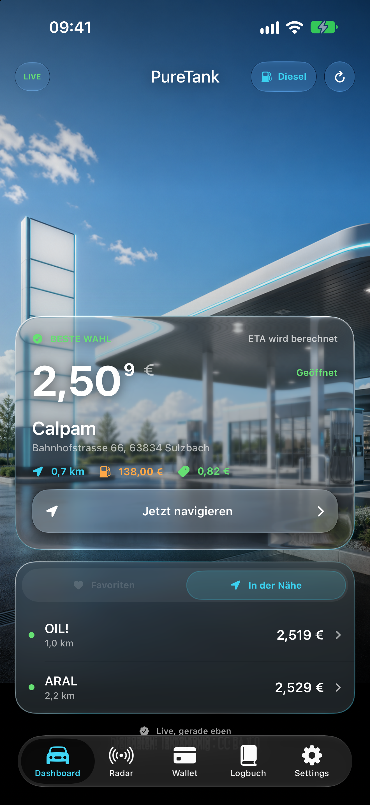
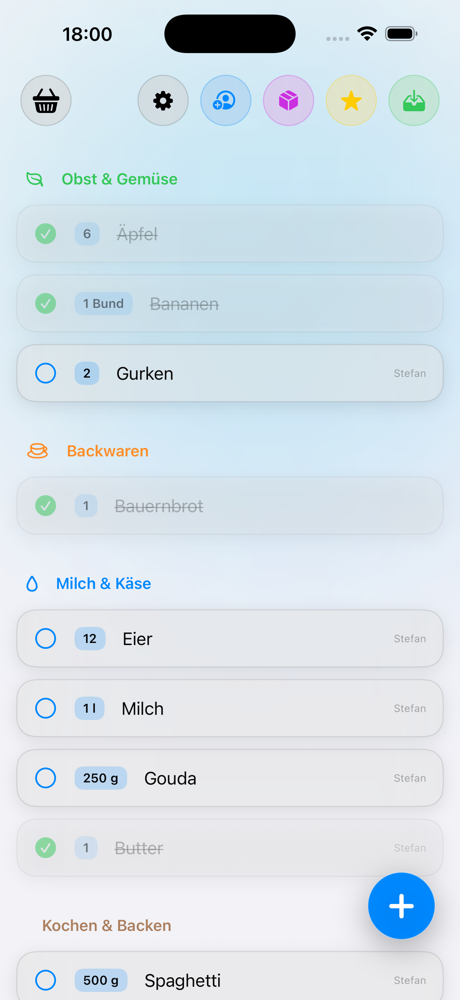
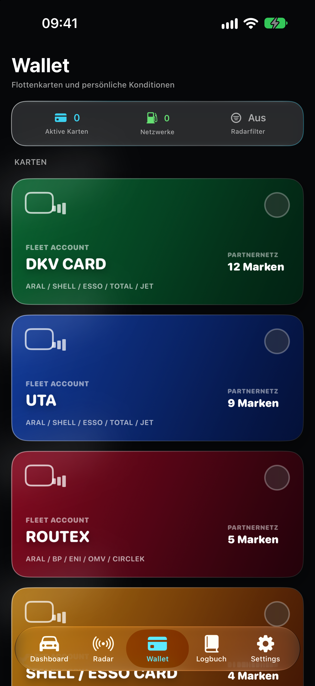
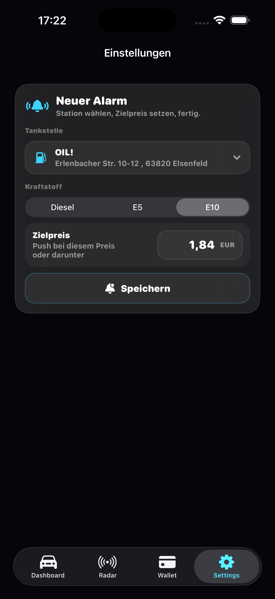
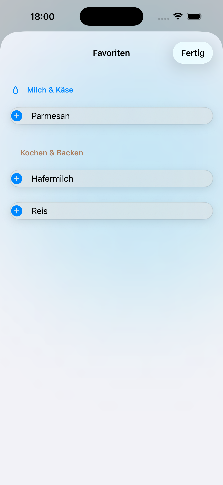
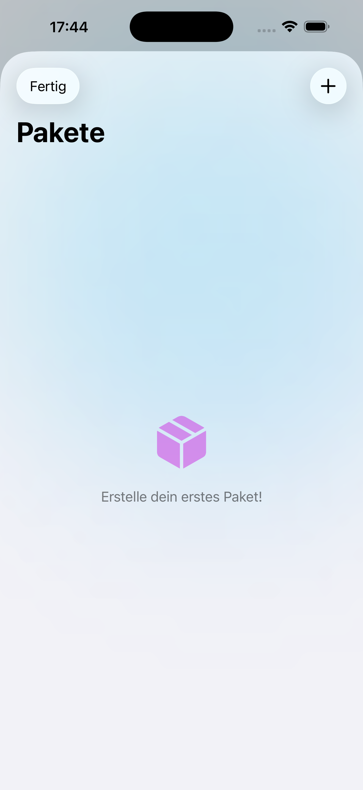
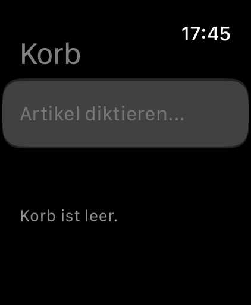

Gesundheitsprotokoll
CorSync hält Blutdruck, Puls, Medikamente und Verlauf strukturiert an einem Ort.
CoreKit Studio für iPhone & Apple Watch
CorSync, PureTank und Korb verbinden moderne Apple-Plattformen mit klaren Alltagsaufgaben: Gesundheitsdaten dokumentieren, intelligenter tanken und Einkäufe synchron planen.



Apps mit Fokus
CoreKit Studio entwickelt fokussierte Apps für den Alltag: CorSync für strukturierte Blutdruck- und Gesundheitsdaten, PureTank für Live-Spritpreise und Flottenkarten, Korb für gemeinsame Einkaufslisten im Apple-Ökosystem.
Gesundheit
iPhone, Apple Watch
CorSync unterstützt dich bei der täglichen Erfassung und Verwaltung deiner Blutdruck- und Gesundheitsdaten. Messwerte, Verlauf, Medikamente und Berichte bleiben übersichtlich an einem Ort.


Mobilität
iPhone
PureTank verbindet Live-Spritpreise, Flottenkarten-Intelligenz und native Apple CarPlay Integration in einer hochwertigen App für Fahrer, die nicht irgendeine Tankstelle suchen, sondern die richtige.


Einkauf
iPhone, Apple Watch
Korb ist eine moderne Einkaufsliste für Paare, Familien und das Apple-Ökosystem. Live-Synchronisation, Apple Watch, Sprachsteuerung und intelligente Favoriten machen den Wocheneinkauf ruhiger und übersichtlicher.



Funktionen
CorSync hält Blutdruck, Puls, Medikamente und Verlauf strukturiert an einem Ort.
Messdaten können als übersichtlicher PDF-Bericht exportiert werden, etwa zur Vorbereitung auf Arzttermine.
CorSync und Korb nutzen Apple Watch-Funktionen für schnelle Eingaben und wichtige Informationen unterwegs.
PureTank zeigt aktuelle Preise für Diesel, Super E5 und Super E10 auf Basis offizieller Markttransparenzdaten.
Aktive Karten wie DKV, UTA, Routex oder Shell/Esso helfen PureTank, passende Stationen zu filtern.
Korb synchronisiert gemeinsame Listen über iCloud, damit Änderungen auf allen Geräten schnell sichtbar werden.
Korb kann dich automatisch erinnern, sobald du deinen Supermarkt erreichst.
Wiederkehrende Einkäufe lassen sich als Bundles speichern und mit einem Fingertipp hinzufügen.
Die Apps sind auf lokale Einstellungen, iCloud-Synchronisation und möglichst sparsame Datenverarbeitung ausgelegt.
CorSync dient ausschließlich der Aufzeichnung, Anzeige und Verwaltung von Gesundheitsdaten. Die App ersetzt keine professionelle medizinische Beratung, Diagnose oder Behandlung und trifft keine medizinischen Entscheidungen.
PureTank verwendet Preisdaten für Deutschland, die von Tankerkönig bereitgestellt werden (CC BY 4.0). Einstellungen, Favoriten und Flottenkarten bleiben auf deinem Gerät; es werden keine Nutzerprofile erstellt.
Korb speichert Listeninhalte in deiner privaten iCloud. Die App ist werbefrei, nutzt keine versteckten Tracker und gibt deine Einkaufsdaten nicht an Dritte weiter.
Kontakt
Für Support, Datenschutzanfragen und App-Store-Kommunikation nutzt CoreKit Studio getrennte geschäftliche Kontaktwege.
Rechtliches
Angaben gemäß § 5 DDG
Stefan Riegler
Dr.-Albert-Hoffa-Str. 16
63834 Sulzbach am Main
Deutschland
E-Mail: legal@corekit-studio.de
Support: support@corekit-studio.de
CoreKit Studio ist eine Projektbezeichnung von Stefan Riegler.
Verantwortlicher: Stefan Riegler
Datenschutzanfragen: privacy@corekit-studio.de
Diese Website dient der Vorstellung von Apps. Beim Aufruf der Seite können technisch notwendige Zugriffsdaten durch den Hosting-Anbieter verarbeitet werden.
Gesundheitsdaten werden in CorSync nicht über diese Website erhoben. PureTank erstellt keine Nutzerprofile und zeigt keine Werbebanner. Korb speichert Einkaufslisten in deiner privaten iCloud. Weitere Hinweise zur Datenverarbeitung findest du in der jeweiligen App und im App Store.